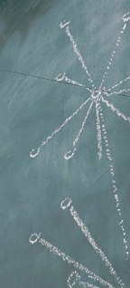
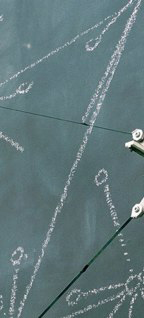
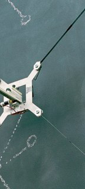
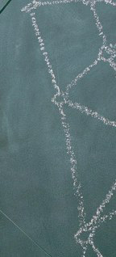
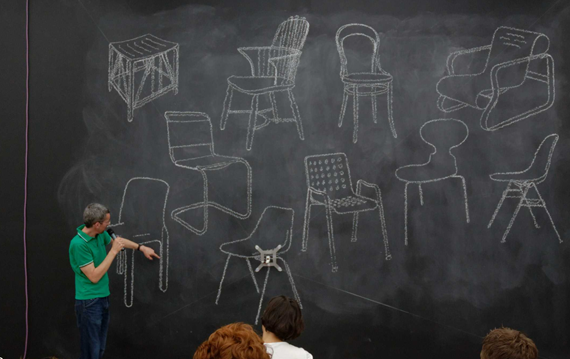
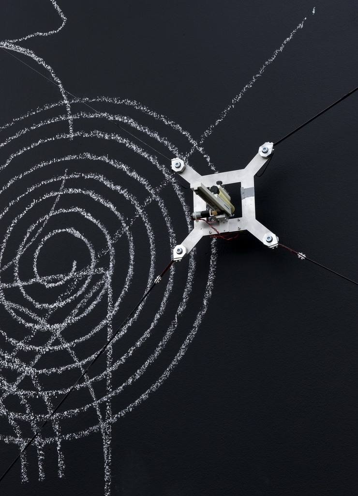

VIKTOR
Viktor is a scalable, robotic chalk-drawing machine designed for large surfaces (up to 20 x 20 meters), driven by the same geometric principles that helped create Hektor.
As with Hektor, the interest was in the creation of a post-industrial device that is not striving to be perfect, but instead has a distinct character in its gestures when executing its line drawing onto walls.
Unlike Hektor, Viktor consists of four motors and belts instead of only two, allowing it to work on larger surfaces, to better position the tool and to apply just enough presure to leave a mark on the surface.
Chalk was chosen as an ephemeral contrast to Hektorʼs very permanent spray paint, giving the device its own character and voice.
Due to these choices, the system lends itself for use as a platform for lectures and performances.
As an example, throughout the duration of the exhibition "A Recent History of Writing and Drawing" at the Institute of Contemporary Arts in London, guests were invited to perform with Viktor on seven Thursday evenings. Curated by Emily King, these events expanded on the themes of the incidental poetry and spare capacity of technology, placing the exhibits in the gallery in a context that goes beyond its four walls.
Viktor was produced in collaboration with Defekt, supported by the Swiss Federal Office of Culture and Migros Cultural Percentage.
An alternative tool head was created to hold spray cans instead of pieces of chalk, conceived for external use on whole buildings.




"Girl with Fish on a Leaf"
Emma Åkerman, Rita + Hektor, Tensta Konsthall, Stockholm, 2005

"5000 Years of Chairs"
Michael Marriott, "A Recent History of Writing and Drawing", Institute of Contemporary Arts, London, 2008

"5000 Years of Chairs"
Michael Marriott, "A Recent History of Writing and Drawing", Institute of Contemporary Arts, London, 2008